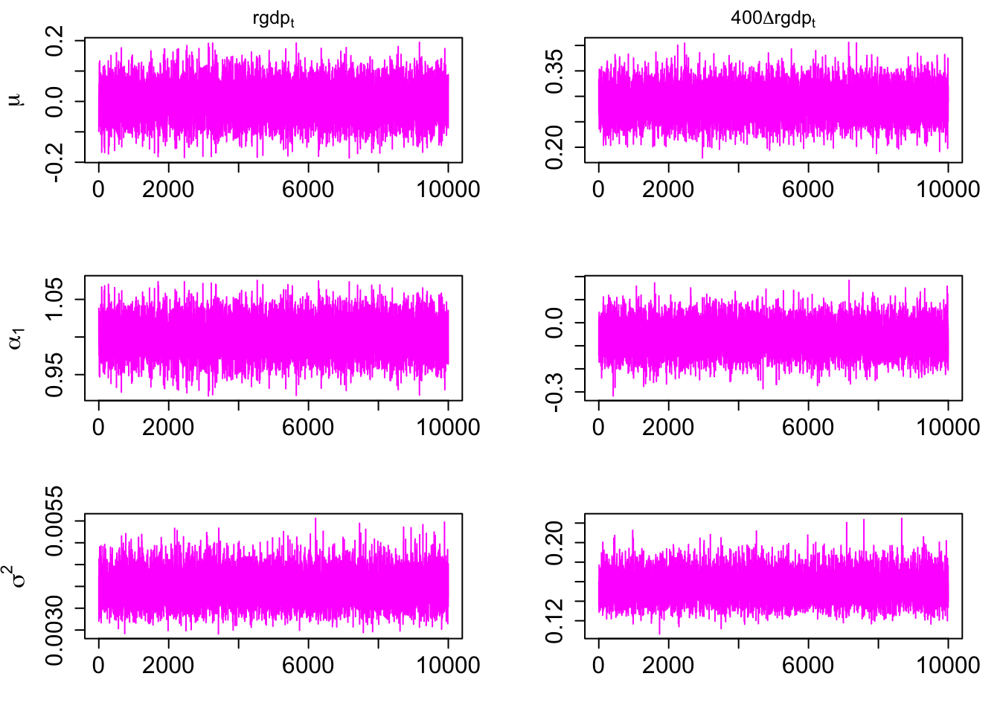
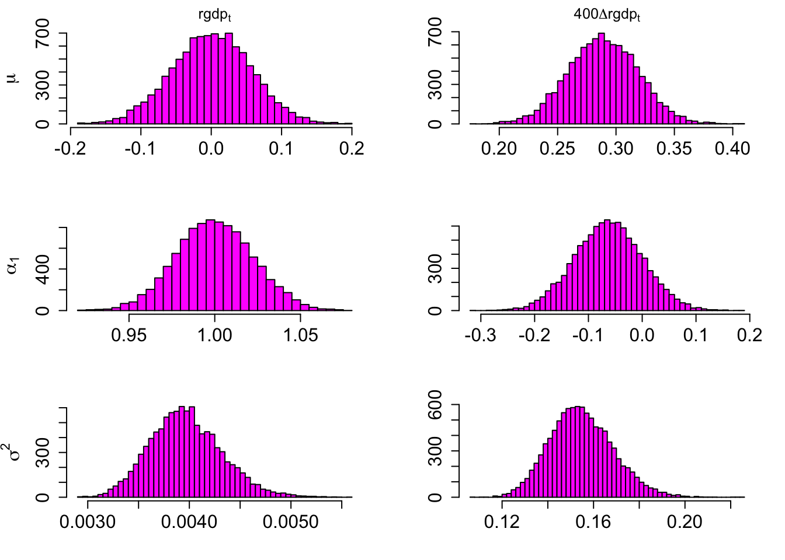

ar1.posterior = function(y,priors){
T = nrow(y)
Y = as.matrix(y[2:T,])
X = cbind(rep(1,T - 1),y[1:(T - 1),])
V.inv = t(X) %*% X + priors$V
V = solve(V.inv)
A = V %*% (t(X) %*% Y + solve(priors$V) %*% priors$A)
s = as.numeric(t(Y) %*% Y + priors$s + t(priors$A) %*% solve(priors$V) %*% priors$A
- t(A) %*% V.inv %*% A)
nu = T - 1 + priors$nu
output = list(
V = V,
A = A,
s = s,
nu = nu
)
return(output)
}2 Exercises in Bayesian Estimation of Autoregression
Exercise 2 Posterior distribution and its properties
Consider a simple autoregression of order 1 given by: \[\begin{align} y_t &= \mu_0 + \alpha_1 y_{t-1} + \epsilon_t\\ \epsilon_t|y_{t-1} &\sim iid\mathcal{N}\left(0,\sigma^2\right) \end{align}\] where \(y_t\) is a scalar real-valued random variable, \(\epsilon_t\) is an error term at time \(t\), and where the parameters of the model are collected in a vector \(\theta=(\mu_0, \alpha_1, \sigma^2)\). The notation is consistent with the one used in lecture slides. Suppose that \(T+1\) observations on \(y_t\) for \(t=0,1,\dots,T\) are available.
Exercise 2.1. Matrix notation
Propose a matrix notation for the model and use it to represent the AR(1) model above in a linear regression form. State explicitly the joint conditional distribution of the error terms \(\epsilon_t\) for for \(t=1,2,\dots,T\). What is the joint predictive distribution of the vector collecting observations on the dependent variable?
Define the following matrices:
\[ \underset{(T\times 1)}{Y} = \begin{bmatrix} y_1\\y_2\\ \vdots \\y_T \end{bmatrix}\qquad \underset{(T\times 2)}{X} = \begin{bmatrix} 1 & y_0\\ 1& y_1\\ \vdots&\vdots \\1&y_{T-1} \end{bmatrix}\qquad \underset{(T\times 1)}{E} = \begin{bmatrix} \epsilon_1\\ \epsilon_2\\ \vdots \\ \epsilon_T \end{bmatrix}\qquad \underset{(2\times 1)}{A} = \begin{bmatrix} \mu_0 \\ \alpha_1 \end{bmatrix} \]
The model can be written as:
\[ Y=XA + E\]
and the joint conditional distribution of the error terms is:
\[ E|X\sim\mathcal{N}\left(\mathbf{0}_{T\times 1},\sigma^2 I_T\right) \]
\(Y\) is a linear combination of a normal vector \(E\). Therefore, the predictive density is given by: \[\begin{equation}\label{eq:predictive} Y|X\sim\mathcal{N}\left(XA,\sigma^2 I_T\right) \end{equation}\]
Exercise 2.2. The likelihood, prior and posterior distributions
Write down the likelihood function for the model. What distribution of vector \(\theta\) does it imply? Propose a~natural-conjugate prior distribution for the parameter vector \(\theta\). Explain why it is a~natural-conjugate specification. Derive the joint posterior distribution of parameter vector \(\theta\) given the data.
Equation \(\eqref{eq:predictive}\) implies the following form of the likelihood function: \[\begin{align*} L(A,\sigma^2|YX) &= \left(2\pi\right)^{-\frac{T}{2}}\left(\sigma^2\right)^{-\frac{T}{2}}\exp\left\{-\frac{1}{2}\frac{1}{\sigma^2}(Y-XA)'(Y-XA)\right\}\\ &\propto \left(\sigma^2\right)^{-\frac{T}{2}}\exp\left\{-\frac{1}{2}\frac{1}{\sigma^2}(Y\pm X\hat{A}-XA)'(Y\pm X\hat{A}-XA)\right\}\\ &= \left(\sigma^2\right)^{-\frac{T}{2}}\exp\left\{-\frac{1}{2}\frac{1}{\sigma^2}\left[(A-\hat{A})'X'X(A-\hat{A}) + (Y-X\hat{A})'(Y-X\hat{A})\right]\right\}\\ &= \left(\sigma^2\right)^{-\frac{T}{2}}\exp\left\{-\frac{1}{2}\frac{1}{\sigma^2}(A-\hat{A})'X'X(A-\hat{A})\right\} \exp\left\{-\frac{1}{2}\frac{1}{\sigma^2}(Y-X\hat{A})'(Y-X\hat{A})\right\} \end{align*}\] which allows us to write it in the form of the following normal-inverse gamma 2 distribution:
\[ L(A,\sigma^2|YX) =\mathcal{NIG}2\left(\mu=\hat{A},V=(X'X)^{-1}, s=(Y-X\hat{A})'(Y-X\hat{A}), \nu=T-4\right) \]
The likelihood function in the form of the normal-inverse gamma 2 distribution is an indicator that a natural-conjugate prior distribution should be in a form of the following normal-inverse gamma 2 distribution:
\[ p(A,\sigma^2) =\mathcal{NIG}2\left(\underline{A},\underline{V}, \underline{s}, \underline{\nu}\right) \]
In consequence, the posterior distribution will a normal-inverse gamma 2 distribution as well.
The posterior distribution is derived from the product of the likelihood function and the prior distribution: \[\begin{align*} p(A,\sigma^2|YX) &\propto L(A,\sigma^2|YX)p(A,\sigma^2)\\ &= \left(\sigma^2\right)^{-\frac{T}{2}}\exp\left\{-\frac{1}{2}\frac{1}{\sigma^2}(Y-XA)'(Y-XA)\right\}\left(\sigma^2\right)^{-\frac{\underline{\nu}+4}{2}}\exp\left\{-\frac{1}{2}\frac{1}{\sigma^2}(A-\underline{A})'\underline{V}^{-1}(A-\underline{A}) + \underline{s}\right\}\\ &= \left(\sigma^2\right)^{-\frac{T+\underline{\nu}+4}{2}}\exp\left\{-\frac{1}{2}\frac{1}{\sigma^2}\left[ Y'Y-2A'X'Y + A'X'XA + A'\underline{V}^{-1}A - 2A'\underline{V}^{-1}\underline{A} + \underline{A}'\underline{V}^{-1}\underline{A} + \underline{s} \right]\right\}\\ &= \left(\sigma^2\right)^{-\frac{T+\underline{\nu}+4}{2}} \exp\left\{-\frac{1}{2}\frac{1}{\sigma^2}\left[ A'\left( X'X + \underline{V}^{-1}\right)A -2A'\left( X'Y + \underline{V}^{-1}\underline{A}\right) + Y'Y+ \underline{A}'\underline{V}^{-1}\underline{A} + \underline{s} \right]\right\} \end{align*}\] Let \(\overline{V}^{-1} = X'X + \underline{V}^{-1}\) and multiply the second element in the square brackets by \(\overline{V}^{-1}\overline{V}\): \[\begin{align*} &= \left(\sigma^2\right)^{-\frac{T+\underline{\nu}+4}{2}} \exp\left\{-\frac{1}{2}\frac{1}{\sigma^2}\left[ A'\overline{V}^{-1}A -2A'\overline{V}^{-1}\overline{V}\left( X'Y + \underline{V}^{-1}\underline{A}\right) + Y'Y+ \underline{A}'\underline{V}^{-1}\underline{A} + \underline{s} \right]\right\} \end{align*}\] Let \(\overline{A}=\overline{V}\left( X'Y + \underline{V}^{-1}\underline{A}\right)\) and add and subtract term \(\overline{A}'\overline{V}^{-1}\overline{A}\): \[\begin{align*} &= \left(\sigma^2\right)^{-\frac{T+\underline{\nu}+4}{2}} \exp\left\{-\frac{1}{2}\frac{1}{\sigma^2}\left[ A'\overline{V}^{-1}A -2A'\overline{V}^{-1}\overline{A} \pm \overline{A}'\overline{V}^{-1}\overline{A} + Y'Y+ \underline{A}'\underline{V}^{-1}\underline{A} + \underline{s} \right]\right\} \end{align*}\] Let \(\overline{\nu}=T+\underline{\nu}\) and rearrange the terms: \[\begin{align*} &= \left(\sigma^2\right)^{-\frac{\overline{\nu}+4}{2}} \exp\left\{-\frac{1}{2}\frac{1}{\sigma^2}\left[ (A-\overline{A})'\overline{V}^{-1}(A-\overline{A}) - \overline{A}'\overline{V}^{-1}\overline{A} + Y'Y+ \underline{A}'\underline{V}^{-1}\underline{A} + \underline{s} \right]\right\} \end{align*}\] Finally, let $= Y’Y+ + ‘^{-1} - ’^{-1} $ to obtain the kernel of the joint posterior distribution in a form: \[\begin{align*} &= \left(\sigma^2\right)^{-\frac{\overline{\nu}+4}{2}} \exp\left\{-\frac{1}{2}\frac{1}{\sigma^2} (A-\overline{A})'\overline{V}^{-1}(A-\overline{A})\right\} \exp\left\{-\frac{1}{2}\frac{\overline{s}}{\sigma^2} \right\} \end{align*}\] that is as the following normal-inverse gamma 2 distribution: \[\begin{align*} p(A,\sigma^2|Y,X) &=\mathcal{NIG}2\left(\overline{A},\overline{V}, \overline{s}, \overline{\nu}\right)\\ \overline{V} &= \left(X'X + \underline{V}^{-1}\right)^{-1}\\ \overline{A}&=\overline{V}\left( X'Y + \underline{V}^{-1}\underline{A}\right)\\ \overline{s}&= Y'Y+ \underline{s}+ \underline{A}'\underline{V}^{-1}\underline{A} - \overline{A}'\overline{V}^{-1}\overline{A}\\ \overline{\nu}&=T+\underline{\nu} \end{align*}\]
Exercise 2.3. Posterior moments and their properties
What is the posterior mean and the posterior variance of parameter \(\alpha_1\)? Describe their properties when the value of the prior variance of this parameter goes to infinity.
The joint posterior distribution of parameters \(A\) and \(\sigma^2\) is the normal-inverse gamma 2 distribution. The properties of this distribution indicate the the posterior mean of parameter \(A\) is equal to \(\overline{A}\) and it exists if \(\overline{\nu}>1\). The posterior covariance of this parameter is equal to \(\frac{\overline{s}}{\overline{\nu}-2}\overline{V}\) and it exist is \(\overline{\nu}>2\). Both of the conditions hold irrespective of the value of \(\underline{\nu}\) as long as more than two observations are used, which is quite certain. The posterior mean of parameter \(\alpha\) is equal to the second element of \(\overline{A}\) and its posterior variance is equal to the bottom right-hand-side element of \(\frac{\overline{s}}{\overline{\nu}-2}\overline{V}\). In the derivations below, assume that the prior covariance matrix \(\underline{V}\) is diagonal.
Write the appropriate matrices as: \[\begin{align*} \overline{V} &= \left( X'X + \underline{V}^{-1}\right)^{-1}\\ &= \begin{bmatrix} T + \frac{1}{\underline{V}_{11}} & \sum y_{t-1}\\ & \sum y_{t-1}^2 + \frac{1}{\underline{V}_{22}} \end{bmatrix}^{-1}\\ &= \frac{1}{ \left( T + \frac{1}{\underline{V}_{11}} \right)\left(\sum y_{t-1}^2 + \frac{1}{\underline{V}_{22}} \right) - \left( \sum y_{t-1}\right)^2 } \begin{bmatrix} \sum y_{t-1}^2 + \frac{1}{\underline{V}_{22}} & -\sum y_{t-1}\\ & T + \frac{1}{\underline{V}_{11}} \end{bmatrix} \end{align*}\] And thus: \[\begin{align*} \overline{V}_{22} &= \frac{T + \frac{1}{\underline{V}_{11}}}{ \left( T + \frac{1}{\underline{V}_{11}} \right)\left(\sum y_{t-1}^2 + \frac{1}{\underline{V}_{22}} \right) - \left( \sum y_{t-1}\right)^2 } \end{align*}\] Note that:
\[ \lim_{\underline{V}_{22}\rightarrow\infty} \frac{1}{\underline{V}_{22}}=0\]
Therefore we obtain: \[\begin{align*} \mathbb{V}ar\left(\alpha|Y,X,\sigma^2\right) &= \frac{\overline{s}}{\overline{\nu}-2}\underline{V}_{22}\\[1ex] \lim_{\underline{V}_{22}\rightarrow\infty}\mathbb{V}ar\left(\alpha|Y,X,\sigma^2\right) &= \frac{\overline{s}}{\overline{\nu}-2} \frac{T + \frac{1}{\underline{V}_{11}}}{ \left( T + \frac{1}{\underline{V}_{11}} \right)\left(\sum y_{t-1}^2 \right) - \left( \sum y_{t-1}\right)^2 } \end{align*}\] Note that the result above does not depend on the prior hyper-parameters of parameter \(\alpha\). Additionally, when the prior variances go to infinity: \[\begin{align*} \lim_{\underline{V}_{11},\underline{V}_{22}\rightarrow\infty}\mathbb{V}ar\left(\alpha|Y,X,\sigma^2\right) &= \frac{\overline{s}}{\overline{\nu}-2} \left( \left(\sum y_{t-1}^2 \right) - \frac{1}{T}\left( \sum y_{t-1}\right)^2 \right)^{-1} \approx \mathbb{V}ar_{as}\left(\hat\alpha\right), \end{align*}\] the posterior variance of parameter \(\alpha\) converges to the asymptotic variance of the MLE of this parameter. This expression does not depend on the prior hyper-parameters at all.
Moving on to the posterior expected value of \(\alpha\)… Define matrix:
\[ \tilde{A} = X'Y + \underline{V}^{-1}\underline{A} = \begin{bmatrix} \sum y_t + \frac{\underline{A}_{11}}{\underline{V}_{11}} \\ \sum y_t y_{t-1} + \frac{\underline{A}_{21}}{\underline{V}_{22}} \end{bmatrix} \]
Then the posterior mean of \(\alpha\) is equal to: \[\begin{align*} \overline{A}_{21} &= \overline{V}_{21}\tilde{A}_{11} + \overline{V}_{22}\tilde{A}_{21}\\ &= \left( \frac{-\sum y_{t-1}}{ \left( T + \frac{1}{\underline{V}_{11}} \right)\left(\sum y_{t-1}^2 + \frac{1}{\underline{V}_{22}} \right) - \left( \sum y_{t-1}\right)^2 } \right) \left( \sum y_t + \frac{\underline{A}_{11}}{\underline{V}_{11}} \right)\\ &\qquad\qquad+ \left( \frac{T + \frac{1}{\underline{V}_{11}}}{ \left( T + \frac{1}{\underline{V}_{11}} \right)\left(\sum y_{t-1}^2 + \frac{1}{\underline{V}_{22}} \right) - \left( \sum y_{t-1}\right)^2 } \right)\left( \sum y_t y_{t-1} + \frac{\underline{A}_{21}}{\underline{V}_{22}} \right) \end{align*}\] And in the limit: \[\begin{align*} \lim_{\underline{V}_{11}\rightarrow\infty}\mathbb{E}\left(\alpha|Y,X\right) &= \left( \frac{-\sum y_{t-1}}{ \left( T + \frac{1}{\underline{V}_{11}} \right)\left(\sum y_{t-1}^2 \right) - \left( \sum y_{t-1}\right)^2 } \right) \left( \sum y_t + \frac{\underline{A}_{11}}{\underline{V}_{11}} \right)\\ &\qquad\qquad+ \left( \frac{T + \frac{1}{\underline{V}_{11}}}{ \left( T + \frac{1}{\underline{V}_{11}} \right)\left(\sum y_{t-1}^2 \right) - \left( \sum y_{t-1}\right)^2 } \right)\left( \sum y_t y_{t-1} \right) \end{align*}\] it does not depend on \(\underline{A}_{21}\) and \(\underline{V}_{22}\), the prior hyper-parameters for \(\alpha\). Additionally, when both of the prior variances go to infinity: \[\begin{align*} \lim_{\underline{V}_{11},\underline{V}_{22}\rightarrow\infty}\mathbb{E}\left(\alpha|Y,X\right) &= \left( \frac{T \sum y_t y_{t-1}-(\sum y_{t-1})^2}{ T \left(\sum y_{t-1}^2 \right) - \left( \sum y_{t-1}\right)^2 } \right) = \hat\alpha \end{align*}\] the posterior expected value of \(\alpha\) converges to the MLE of this parameter.
Exercise 2.4. Marginal posterior
What is the bivariate marginal posterior distribution of parameters \((\mu_0,\alpha_1)\), denoted by \(p(\mu_0,\alpha_1|Y,X)\)? Describe intuitively how this distribution is obtained?
This exercise could be answered following the solution provided in Chapter 4 of the textbook by Greenberg (2008), a compulsory reading.
The joint posterior distribution of \(A\) and \(\sigma^2\) given data is the following normal-inverse gamma 2 distribution: \[\begin{align*} p\left(A,\sigma^2|Y,X\right) &= p\left(A|Y,X,\sigma^2\right) p\left(\sigma^2|Y,X\right) \\ p\left(A|Y,X,\sigma^2\right) &= \mathcal{N}_2\left( \overline{A}, \sigma^2 \overline{V} \right)\\ p\left(\sigma^2|Y,X\right) &= \mathcal{IG}2\left( \overline{s}, \overline{\nu} \right) \end{align*}\] To compute the marginal posterior distribution of \(A\) \(\sigma^2\) needs to be integrated out from the joint posterior distribution: \[\begin{align*} p\left(A|Y,X\right) &= \int_0^{\infty}p\left(A,\sigma^2|Y,X\right) d\sigma^2 = \int_0^{\infty}p\left(A|Y,X,\sigma^2\right)p\left(\sigma^2|Y,X\right) d\sigma^2\\ &\propto \int_0^{\infty} \left(\sigma^2\right)^{\frac{\overline{\nu}+4}{2}}\exp\left\{-\frac{1}{2}\frac{1}{\sigma^2}\left[\left(A-\overline{A}\right)'\overline{V}^{-1}\left(A-\overline{A}\right) + \overline{s}\right]\right\} d\sigma^2 \end{align*}\] Let \(Q=\left(A-\overline{A}\right)'\overline{V}^{-1}\left(A-\overline{A}\right) + \overline{s}\) and rewrite the expression above as: \[\begin{align*} p\left(A|Y,X\right) &\propto \int_0^{\infty} \left(\sigma^2\right)^{\frac{\overline{\nu}+4}{2}}\exp\left\{-\frac{1}{2}\frac{Q}{\sigma^2}\right\} d\sigma^2 \end{align*}\] Under the integral of the expression above we recognize a kernel of the inverse gamma 2 distribution. Since we know the pdf of this distribution, we also know its normalizing constant which gives us the solution to the integral (see slide 10 of Lecture 3): \[\begin{align*} p\left(A|Y,X\right) &\propto \Gamma\left(\frac{\overline{\nu}}{2}\right)2^{\frac{\overline{\nu}}{2}}Q^{-\frac{\overline{\nu}}{2}} \propto \left[\overline{s}+\left(A-\overline{A}\right)'\overline{V}^{-1}\left(A-\overline{A}\right)\right]^{-\frac{\overline{\nu}}{2}} \end{align*}\] The last expression on the right-hand side above is equal to the kernel of the following Student’s t distribution: \[\begin{align*} p\left(A|Y,X\right) &= t\left( \overline{A}, \overline{V}, \overline{s}, \overline{\nu}-2 \right) \end{align*}\]
Exercise 3: Bayesian estimation in R
Consider the AR(1) model and the estimation procedures derived in Exercise 2.
Exercise 3.1. Estimation function
Write a function in R for the Bayesian estimation of the parameters of the model. The function should take as input:
- a data vector containing all of the observations on the variable of interest,
- the parameters of the prior distribution provided as a list object.
The function should return as output:
- a list object containing the values of the parameters characterising the posterior distribution.
The R script of a proposed function is:
Exercise 3.2. Sampling random draws from the posterior
Write a function in R for the Monte Carlo simulation of the posterior distribution of the parameters of the AR(1) model specified above. The function should take as input:
- a list object containing the values of the parameters characterising the posterior distribution that is created by the function written in Exercise 3.1.
The function should return as output:
- an \(\mathbf{S\times 3}\) matrix containing \(S\) draws from the joint posterior distribution of the parameters of the model.
The R script of a proposed function is given below.
Note that the line for sigma2.posterior samples draws of \(\sigma^2\) en block and the following line uses vectorization technique implemented using function lapply to perform the sampling of \(A\) without using a loop.
ar1.posterior.draws = function(S,posterior){
sigma2.posterior = as.matrix(posterior$s/rchisq(S,posterior$nu))
A.posterior = simplify2array(
lapply(1:S,function(i){
mvtnorm::rmvnorm(1,mean=posterior$A,sigma=sigma2.posterior[i,]*posterior$V)
})
)
output = cbind(t(A.posterior[1,,]),sigma2.posterior)
return(output)
}Exercise 4: Empirical analysis of Australian real Gross Domestic Product
Consider a time series for Australian real GDP downloaded from the Australian Real-Time Macroeconomic Database that was analysed during . A csv file containing \(T=230\) observations on the quarterly data from quarter 3 of 1959 to the last quarter of 2016 can be downloaded by clicking .
Exercise 4.1. GDP growth properties
Upload the data to the memory of R and transform it into a matrix with one column containing the natural logarithm of the original series. Transform this matrix into a object and specify the time stamps for the observations. Create a new object containing the annualized log-returns expressed in percentage points of the series using the following transformation: \(r_t = 400(rgdp_t - rgdp_{t-1})\), where \(rgdp_t\) is the logarithm of the original time series. Plot both of the series in time series plots. Create autocorrelations graphs at lags from 1 to 20 for the both of the series. Interpret the content from the four graphs and discuss the evidence of what properties of the time series they include.
The graphs for variable \(rgdp_t\) in the first column above indicate that the variable is likely to exhibit unit-root nonstationarity potentially with a drift. The evidence for very high persistence resembling the autocorrelation patterns of a unit-root nonstationary process is given in the plot below. The upward trend visible in the data plot additionally indicates a potential drift in the process.
gdp_dwnld = readabs::read_abs(series_id = "A2304402X") # real GDP SA 1959 Q3Finding URLs for tables corresponding to ABS series ID Attempting to download files from series ID , Australian National Accounts: National Income, Expenditure and ProductDownloading https://www.abs.gov.au/statistics/economy/national-accounts/australian-national-accounts-national-income-expenditure-and-product/latest-release/5206001_key_aggregates.xlsxExtracting data from downloaded spreadsheetsTidying data from imported ABS spreadsheetsgdp_tmp = xts::xts(log(gdp_dwnld$value), gdp_dwnld$date)
gdp_tmp = xts::to.quarterly(gdp_tmp, name = "gdp")[,4]
y = ts(as.matrix(log(gdp_tmp)), start = c(1959,3), frequency = 4)
r = 400*diff(y)
par(mfrow = c(2,2), mar = c(4,4.5,2,2), cex.axis = 1.5, cex.lab = 1.5)
plot(y,main = "", ylab=expression(rgdp[t]), xlab = "time", col="magenta",lwd=2)
plot(r,main="", ylab=expression(400*Delta*rgdp[t]), xlab="time", col="magenta",lwd=2)
FinTS::Acf(y, lag.max=20, type="correlation", col="magenta", lwd=4, xlab="years", main="")
FinTS::Acf(r, lag.max=20, type="correlation", col="magenta", lwd=4, xlab="years", ylab="", main="")Time series of annualized log-returns of the real GDP, \(r_t = 400\Delta rgdp_t\), has very different properties. It is visible in the data plot that the series oscillates around a positive constant value. This fact, together with the evidence of hardly any serial correlation from the autocorrelogram allows us to conclude that these log returns are unit-root stationary series. Therefore, it seems that the variable \(rgdp_t\) is intgrated of order 1. Finally, the time series plot of the log-returns indicates higher volatility throughout the half of the sample period than in the second one.
Exercise 4.2. Estimation results
Set the parameters of the natural-conjugate prior distribution and motivate the values that you choose. Use the computer codes you developed in to estimate the AR(1) model with a constant term for each of the series. Use the obtained draws from the posterior density to:
- Plot the Monte Carlo draws in trace plots. Comment on whether the algorithm converged to the stationary posterior distribution.
- Plot the histograms of the marginal posterior distributions for all of the parameters of both the models that you estimated. Comment on the shapes of the histograms and the distribution of the probability mass.
- Compute the sample means and sample standard deviations of the posterior draws for each of the estimated parameters. Interpret these values.
priors.y = list(
A = as.matrix(c(0,1)),
V = diag(2),
s = 1,
nu = 3
)
priors.r = list(
A = as.matrix(c(0,0)),
V = diag(2),
s = 1,
nu = 3
)
posterior.y = ar1.posterior(y,priors.y)
posterior.draws.y = ar1.posterior.draws(S=10000,posterior.y)
posterior.r = ar1.posterior(r,priors.r)
posterior.draws.r = ar1.posterior.draws(S=10000,posterior.r)The trace plots clearly indicate that the posterior draws for all of the parameters of the models hover around constant values, that is, the corresponding posterior means. No burn-in sample had to used for the algorithm to obtain convergence. This is the expected outcome of direct sampling from the posterior distributions in a known form.
par(mfrow=c(3,2), mar=c(4,4.5,2,2),cex.axis=1.5, cex.lab=1.5)
plot.ts(posterior.draws.y[,1], main=expression(rgdp[t]),xlab="", ylab=expression(mu), col="magenta")
plot.ts(posterior.draws.r[,1], main=expression(400*Delta*rgdp[t]),xlab="", ylab="", col="magenta")
plot.ts(posterior.draws.y[,2], main="",xlab="", ylab=expression(alpha[1]), col="magenta")
plot.ts(posterior.draws.r[,2], main="",xlab="", ylab="", col="magenta")
plot.ts(posterior.draws.y[,3], main="",xlab="", ylab=expression(sigma^2), col="magenta")
plot.ts(posterior.draws.r[,3], main="",xlab="", ylab="", col="magenta")
The figure below presents histograms of the marginal posterior distributions for the parameters of the models. The constant term and the autoregressive parameters of both of the models have bell-shaped distributions resembling the shape of t-distributed random variables, while the error term variances’ histograms are asymmetric to the right, clearly reflecting the shape of the inverse gamma 2 distributions.
par(mfrow=c(3,2), mar=c(4,4.5,2,2),cex.axis=1.5, cex.lab=1.5)
hist(posterior.draws.y[,1], main=expression(rgdp[t]),xlab="", ylab=expression(mu), col="magenta",breaks=50)
hist(posterior.draws.r[,1], main=expression(400*Delta*rgdp[t]),xlab="", ylab="", col="magenta",breaks=50)
hist(posterior.draws.y[,2], main="",xlab="", ylab=expression(alpha[1]), col="magenta",breaks=50)
hist(posterior.draws.r[,2], main="",xlab="", ylab="", col="magenta",breaks=50)
hist(posterior.draws.y[,3], main="",xlab="", ylab=expression(sigma^2), col="magenta",breaks=50)
hist(posterior.draws.r[,3], main="",xlab="", ylab="", col="magenta",breaks=55)
The results below confirm the conclusions that could be formed about the location of the probability mass of the parameters. The posterior mean of the constant term of the model for variable \(rgdp_t\) is small and point zero lays in a region of high concentration of the probability mass. For the same model, the autoregressive slope has the value of nearly one and the shape of the posterior distribution is typical for a unit-root non-stationary random variable. The non-stationarity is well documented by the results above, however, a hypothesis of non-zero drift does not find empirical support.
round(rbind(
apply(posterior.draws.y,2,mean),
apply(posterior.draws.y,2,sd)
),4) [,1] [,2] [,3]
[1,] 0.0007 1.0000 4e-03
[2,] 0.0561 0.0224 4e-04round(rbind(
apply(posterior.draws.r,2,mean),
apply(posterior.draws.r,2,sd)
),4) [,1] [,2] [,3]
[1,] 0.2885 -0.0632 0.1545
[2,] 0.0303 0.0629 0.0140The autoregressive slope parameter for the model for the quarterly annualized log-returns has the posterior distribution concentrated near value zero with the posterior mean equal to -0.063 and the posterior standard deviation equal to 0.07. Therefore, this variable is clearly stationary, mean-reverting, and the average quarterly annualized log-return has value around 3.6 pp.
Exercise 4.3. Unit root testing
Compute the fraction of the posterior draws of parameter \(\alpha_1\) that are greater than 1 for both of the models. Confront these results with the histograms, posterior means and standard deviations of \(\alpha_1\) for both of the models, and interpret these results. Comment on the Bayesian evidence in favour of the unit root hypothesis for each of the time series. Comment on the interpretations of the values of the constant term in both of the models in the context of your statements on unit-root stationarity of the considered time series.
The table below reports also the posterior probabilities that parameter \(\alpha_1\) has value greater than 1 for both of the models. These probabilities take values of 0.47 and 0 respectively and clearly confirm the statements regarding the unit-root non-stationarity of both of the variables. The former values indicates that no statistical test based on the estimates above would reject the hypothesis of unit-root in \(rgdp_t\) while such a hypothesis would clearly be rejected for the log-returns.
sum(posterior.draws.y[,2]>1)/10000[1] 0.4976sum(posterior.draws.r[,2]>1)/10000[1] 0